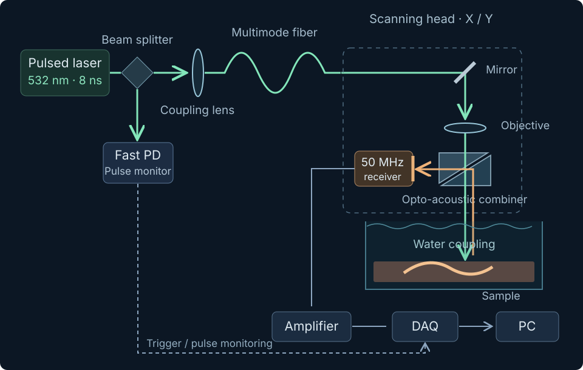

IMAGE FORMATION
3D photoacoustic volume
Drag to rotate · scroll to zoom Detector positions
LowHigh PA amplitude
PHOTOACOUSTICS / v1.1
Explore photoacoustic imaging, microscopy & reconstruction.
IMAGE FORMATION
TIME DOMAIN
CHANGE THE EXPERIMENT
Preparing scan…
THE REFERENCE
Brighter pixels are assigned weaker absorber weights.
Comparison uses the top-view reconstruction and canonical absorber weights after global normalization.
THE EXPERIMENT

A new schematic adapted from the paper’s raster-scan architecture. Not to scale. The selected array geometry is shown in the 3D viewer.
AWAITING PAPER PUBLICATION
The dataset will be available after we publish the accompanying paper. Download buttons are intentionally disabled until then. You can still explore all 50 demo images and scan configurations in Photoacoustic Lab.
The future package pairs 2D images with PA signals, receiver coordinates, settings and reconstruction guides.
Data README · Physics guide · Reconstruction guide
Questions about the lab or dataset? Contact Shahriar Zeynali at szeynali@purdue.edu.
A top-view MAP cannot uniquely supply depth or original signals. The input defines absorber weights on an assigned depth sheet. The 3D reconstruction and all three orthogonal views are computed from simulated RF data.
The raster mode maps Hilbert-envelope A-lines to depth. Array modes sum delayed point-source packets at real receiver coordinates, then use matched-filter delay-and-sum. These are reduced-order browser models, with straight paths and idealized receivers.
Laser channel: a Gaussian pulse with the chosen FWHM and integrated surface fluence. The PA channel shares the same time origin, with one-way acoustic travel delay. Receive amplitudes are in relative units.
Asadollahi et al. (2022) supplies the 50 MHz / 532 nm / 8 ns paper preset. The schematic is an original conceptual adaptation. Generic array presets are not hardware specifications from this paper.
OMLC hemoglobin coefficients supply optical absorption. k-Wave sensor masks support arbitrary receiver coordinates. The separate MATLAB reference runner currently supports the raster configuration.
This entire interface is static and compatible with GitHub Pages. MATLAB / k-Wave requires a separate local or server runtime. Display stretching and thresholds affect visualization only.